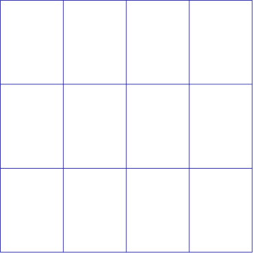
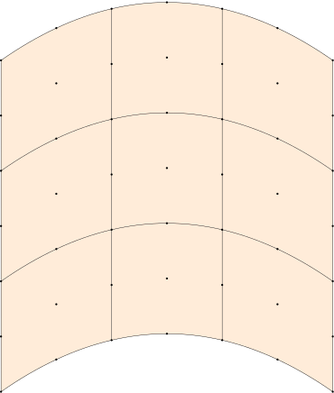
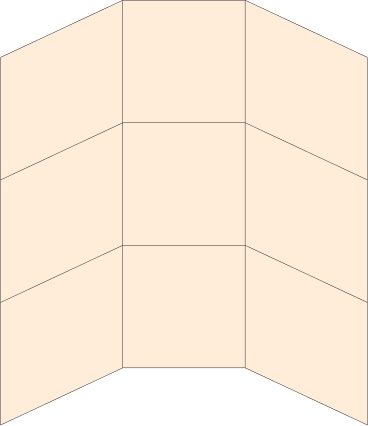

Wireframes and element figures
using FerriteTikzThe plain wireframe
By default tikzgrid draws nothing but the element edges, each one exactly once:
grid = generate_grid(Triangle, (6, 4))tikzgrid(grid; picturescale = 6.5)picturescale is the TikZ scale= factor, i.e. how large one grid unit is drawn. It is named picturescale rather than scale because scale is reserved for the displacement magnification, see The deformed configuration.
Line appearance
linewidth, linecolor and linestyle are passed through to TikZ verbatim, so any key that TikZ understands works:
grid = generate_grid(Quadrilateral, (4, 3))tikzgrid( grid; linewidth = "line width=0.8pt", linecolor = "blue!60!black", picturescale = 6.5,)
Node and cell numbering
Element figures for a paper or a lecture usually want the numbering visible:
grid = generate_grid(Quadrilateral, (2, 2))tikzgrid( grid; drawnodes = true, nodelabels = true, celllabels = true, picturescale = 6.5,)labelstyle controls the font ("font=\\scriptsize" by default), labeloffset how far the node labels sit from their node, and nodestyle the appearance of the markers.
Higher-order elements
Cells with a quadratic geometric interpolation are drawn with real curved edges. The mid-side node of each edge defines a quadratic Bézier curve, which is degree-elevated to the cubic Bézier that TikZ speaks, so the drawn edge is exactly the element edge — not a polygonal approximation of it.
grid = generate_grid(QuadraticQuadrilateral, (3, 3))# bend the mesh so the curvature is visibletransform_coordinates!(grid, x -> Vec{2}((x[1], x[2] + 0.35 * (1 - x[1]^2))))tikzgrid(grid; cellcolor = "orange!15", drawnodes = true, picturescale = 6.5)
Pass bezier = false to fall back to straight corner-to-corner edges:
tikzgrid(grid; cellcolor = "orange!15", bezier = false, picturescale = 6.5)
Getting at the code
tikzcode accepts the same arguments as tikzgrid but returns the raw TikZ body as a String:
grid = generate_grid(QuadraticTriangle, (1, 1))print(tikzcode(grid))\draw[thin, black] (-1,-1) .. controls (-0.33333,-1) and (0.33333,-1) .. (1,-1);
\draw[thin, black] (1,-1) .. controls (0.33333,-0.33333) and (-0.33333,0.33333) .. (-1,1);
\draw[thin, black] (-1,1) .. controls (-1,0.33333) and (-1,-0.33333) .. (-1,-1);
\draw[thin, black] (1,-1) .. controls (1,-0.33333) and (1,0.33333) .. (1,1);
\draw[thin, black] (1,1) .. controls (0.33333,1) and (-0.33333,1) .. (-1,1);